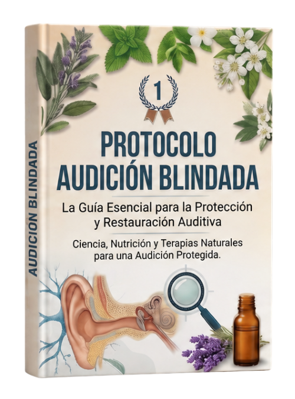
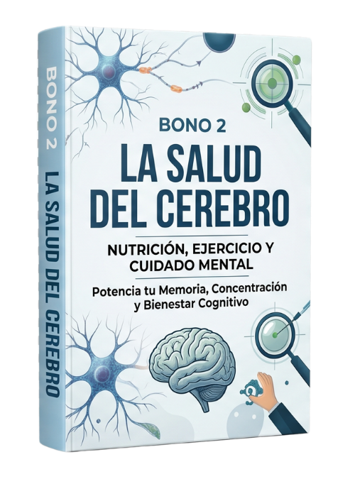
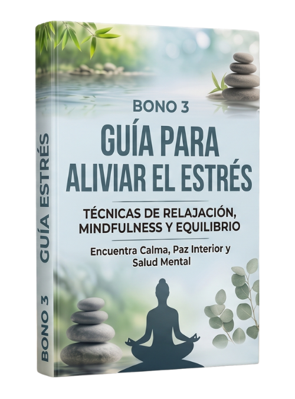
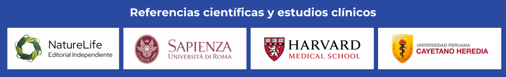

Confidential
Si el zumbido no te deja dormir, concentrarte ni vivir en paz, esto fue hecho exactamente para ti
¡Click en el botón 👇 para ver en su moneda local y facilidades en cuotas!
¡SÍ, QUIERO SILENCIAR MI TINNITUS Y POTENCIAR MI MEMORIA!TODO LO QUE RECIBIRÁS HOY:
PROTOCOLO AUDICIÓN BLINDADA + 3 BONOS EXCLUSIVOS

PROTOCOLO AUDICIÓN BLINDADA
- ✓ La guía completa para entender por qué tienes zumbido y qué hacer exactamente para reducirlo.
- ✓ Recetas caseras con plantas naturales listas para preparar hoy mismo y reducir el zumbido desde adentro.
- ✓ Alimentos y hábitos simples del día a día que ayudan a recuperar y proteger tu audición de forma natural.
- ✓ Técnicas fáciles para evitar que el zumbido regrese o empeore con el tiempo.
- ✓ Plan de 30 días con pasos claros para que notes la mejora semana a semana.
- VALOR $149 USD

BONO #1: ÓLEOS NATURALES
- ✓ Guía completa de aromaterapia aplicada a la salud auditiva: qué aceites usar, cómo y cuándo.
- ✓ Los 7 óleos esenciales con mayor respaldo científico para reducir la inflamación del nervio auditivo.
- ✓ Recetas de uso diario: mezclas, diluciones y métodos de aplicación seguros para el oído y el cuello.
- ✓ Protocolo de emergencia aromaterapéutico de 3 minutos para calmar un pico agudo de tinnitus.
- ✓ Combinaciones con alimentos y hábitos diarios para potenciar el efecto de cada óleo natural.
- VALOR $79 USD — GRATIS al unirte al programa

BONO #2: LA SALUD DEL CEREBRO
- ✓ Nutrición cerebral específica para reparar las vías neurológicas afectadas por el tinnitus crónico.
- ✓ Plan de ejercicio cognitivo de 10 minutos diarios para recuperar concentración y memoria a largo plazo.
- ✓ Los 5 hábitos de cuidado mental que más impactan en la percepción del zumbido según la neurociencia.
- ✓ Estrategias de gestión del estrés diseñadas para romper el ciclo tinnitus–ansiedad–insomnio.
- ✓ Rutina matutina de bienestar cognitivo para comenzar cada día con claridad mental y sin fatiga auditiva.
- VALOR $67 USD — GRATIS al unirte al programa

BONO #3: GUÍA PARA ALIVIAR EL ESTRÉS
- ✓ Técnicas de relajación profunda especialmente seleccionadas para personas con tinnitus activo.
- ✓ Protocolo de mindfulness auditivo: aprende a desactivar la respuesta de alerta que amplifica el zumbido.
- ✓ Ejercicios de equilibrio emocional para recuperar paz interior incluso en los días de mayor intensidad.
- ✓ Rutina de relajación nocturna de 7 minutos para apagar el ruido mental y lograr un sueño profundo.
- ✓ Plan de 21 días para construir una base sólida de calma, salud mental y bienestar sostenido.
- VALOR $35 USD — GRATIS al unirte al programa
ACCEDE A TODO ESTO POR SOLO:

Conoce el precio en tu moneda local dando clic al botón:
ACCEDER AHORA CON EL 84% DE DESCUENTOCONSULTE LAS PREGUNTAS MÁS FRECUENTES
Es un programa de salud auditiva y cerebral que combina ciencia de frecuencias, nutrición natural y terapias no invasivas para abordar el tinnitus desde su raíz neurológica. Actúa sobre la rama auricular del nervio vago —conocida como rama de Arnold— que es la conexión entre el oído y el cerebro responsable de la señal de calma. Cuando esa vía se interrumpe por estrés, tensión o daño acústico, el cerebro genera el zumbido como mecanismo de alerta. El protocolo trabaja para reconectar y calmar esa vía de forma natural.
Haz clic en cualquiera de los botones de esta página, completa el formulario con tus datos y realiza el pago. El acceso al Protocolo Audición Blindada + los 3 bonos será enviado automáticamente a tu correo electrónico en menos de 2 minutos.
Al finalizar tu compra recibirás un usuario y contraseña personales. Solo tendrás que acceder con esos datos a nuestra área de miembros, donde encontrarás el protocolo principal y todos los bonos organizados y listos para usar. Puedes acceder desde cualquier dispositivo: celular, tablet o computadora.
Sí. Ofrecemos garantía incondicional de satisfacción. Si aplicas el protocolo con constancia y, al completar el proceso, no notas una mejora real en tu bienestar auditivo o una reducción significativa del tinnitus, solicitas el reembolso del 100% de tu inversión. Sin preguntas, sin burocracia. Asumimos todo el riesgo por ti porque creemos firmemente en lo que este protocolo puede hacer.
La mayoría de las personas reporta cambios perceptibles en el bienestar auditivo y la calidad del sueño durante las primeras 2 a 3 semanas de uso consistente. A lo largo del primer mes, los resultados se consolidan: menor intensidad del zumbido, más claridad mental y mejor capacidad de concentración. La constancia es clave para una transformación duradera.
Tendrás acceso a soporte personalizado por WhatsApp y correo electrónico en español. Nuestro equipo responde dentro de las 24 horas hábiles y te acompañará durante todo el proceso para asegurarse de que estés aprovechando el protocolo al máximo.
El Protocolo Audición Blindada está diseñado para cualquier persona que sufra de tinnitus —sea de días, meses o años— y que ya haya agotado las opciones convencionales sin encontrar alivio real. Es especialmente útil para quienes experimentan dificultad para dormir por el zumbido, problemas de concentración, irritabilidad crónica o pérdida progresiva de la claridad auditiva. No requiere conocimientos previos ni equipos especiales.
